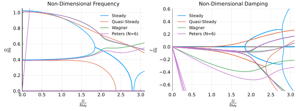

Aeroelastic Analysis of a Typical Section
In this example, we perform a two-dimensional aeroelastic analysis for a two degree of freedom typical section model.

This example is also available as a Jupyter notebook: section-stability.ipynb.
The equations of motion for this model are
\[m \left(\ddot{h}+b x_\theta \ddot{\theta} \right) + k_h h = -L \\ I_\theta \ddot{\theta} + m b x_\theta \ddot{h} + k_\theta = M\]
where $b$ is the semichord length, $k_h$ is the linear spring constant, $k_\theta$ is the torsional spring constant, $m$ is the mass per unit span, $x_\theta$ is the distance to the center of mass from the reference point, $I_θ$ is the moment of inertia about the reference point, $L$ is the lift per unit span, and $M$ is the moment per unit span about the reference point. To learn more about how this model is implemented in this package, see Section.
This package has a number of pre-implemented aerodynamic models which may be used to model the aerodynamics of the typical section model. These models include a steady-state thin airfoil theory model (see Steady), a quasi-steady thin airfoil theory model (see QuasiSteady), an unsteady aerodynamic model based on Wagner's function (see Wagner), and Peters' finite state aerodynamic model (see Peters). We will perform aeroelastic analyses using each of these models and compare the results.
The non-dimensional parameters we will use are
\[a = -1/5 \quad e = -1/10 \\ r^2 = \frac{I_P}{m b^2} \quad \sigma = \frac{\omega_h}{\omega_\theta} \\ \mu = \frac{m}{\rho_\infty \pi b^2} \quad V = \frac{U}{b \omega_\theta}\]
where $a$ is the normalized distance from the semichord to the reference point, $e$ is the normalized distance from the semichord to the center of mass, and $\omega_h$ and $\omega_\theta$ are the uncoupled natural frequencies, defined as
\[\omega_h = \sqrt{\frac{k_h}{m}} \quad \omega_\theta = \sqrt{\frac{k_\theta}{I_P}}\]
using Aeroelasticity, DifferentialEquations, LinearAlgebra
# define non-dimensional parameters
V = range(1e-6, 3.1, length=1000) # = U/(b*ωθ) (reduced velocity)
a = -1/5 # reference point normalized location
e = -1/10 # center of mass normalized location
μ = 20 # = m/(ρ*pi*b^2) (mass ratio)
r2 = 6/25 # = Iθ/(m*b^2) (radius of gyration about P)
σ = 2/5 # = ωh/ωθ (natural frequency ratio)
xθ = e - a # distance from center of mass to reference point
a0 = 2*pi # lift curve slope
α0 = 0 # zero lift angle
cd0 = 0 # drag coefficient
cm0 = 0 # moment coefficient
# choose dimensional parameters
b = 1 # semichord
ρ = 1 # air density
ωθ = 1 # pitch natural frequency
c = 343 # air speed of sound
# calculate dimensionalized parameters
U = V*b*ωθ # freestrean velocity
m = μ*ρ*pi*b^2 # mass
Sθ = m*xθ*b # mass imbalance
Iθ = r2*m*b^2 # inertia
ωh = σ*ωθ # plunge natural frequency
kh = m*ωh^2 # plunge spring constant
kθ = Iθ*ωθ^2 # pitch spring constant
# define aerodynamic models
aerodynamic_models = (Steady(), QuasiSteady(), Wagner(), Peters{6}())
# initialize eigenvalue/eigenvector storage
λ = Vector{Matrix{ComplexF64}}(undef, length(aerodynamic_models))
Uλ = Vector{Array{ComplexF64,3}}(undef, length(aerodynamic_models))
Vλ = Vector{Array{ComplexF64,3}}(undef, length(aerodynamic_models))
# perform an analysis for each aerodynamic model
for imodel = 1:length(aerodynamic_models)
# define coupled model
model = assemble_model(;
aerodynamic_model = aerodynamic_models[imodel],
structural_model = Section())
# define ODE function
f = ODEFunction(model)
# eigenvalue/eigenvector storage
nλ = number_of_states(model)
λ[imodel] = zeros(ComplexF64, nλ, length(V))
Uλ[imodel] = zeros(ComplexF64, nλ, nλ, length(V))
Vλ[imodel] = zeros(ComplexF64, nλ, nλ, length(V))
# loop through each reduced frequency
for i = 1:length(V)
# define aerodynamic parameters
aerodynamic_parameters = (; a = a, b = b, a0 = a0, alpha0 = α0, cd0 = cd0, cm0 = cm0)
# define structural parameters
structural_parameters = (; kh = kh, ktheta = kθ, m = m, Stheta = Sθ, Itheta = Iθ)
# define additional parameters
additional_parameters = (; U = U[i], rho = ρ, c = c)
# define parameter vector
p = assemble_parameters(model;
aerodynamic_parameters = aerodynamic_parameters,
structural_parameters = structural_parameters,
additional_parameters = additional_parameters)
# define initial guess for equilibrium states
x0 = assemble_states(model)
# find equilibrium point
x = solve(SteadyStateProblem(f, x0, p))
# linearize about equilibrium point
K, M = linearize(model, x, p)
# perform linear stability analysis
λi, Uλi, Vλi = get_eigen(model, K, M)
# correlate eigenvalues
if i > 1
# previous left eigenvector matrix
Uλpi = Uλ[imodel][:,:,i-1]
# use correlation matrix to correlate eigenmodes
perm, corruption = correlate_eigenmodes(Uλpi, M, Vλi)
# re-arrange eigenmodes
λi = λi[perm]
Uλi = Uλi[perm,:]
Vλi = Vλi[:,perm]
end
# save eigenvalues/eigenvectors
λ[imodel][:,i] = λi
Uλ[imodel][:,:,i] = Uλi
Vλ[imodel][:,:,i] = Vλi
end
endWe now plot the results for each aerodynamic model.
using Plots
pyplot()
sp1 = plot(
title = "Non-Dimensional Frequency",
xlim = (0,3.1),
xtick = 0.0:0.5:3.0,
xlabel = "\$ \\frac{U}{b \\omega_\\theta} \$",
ylim = (0, 1.05),
ytick = 0.0:0.2:1.0,
ylabel = "\$ \\frac{\\Omega}{\\omega_\\theta} \$",
titlefontsize = 10,
guidefontsize = 10,
legendfontsize = 8,
tickfontsize = 9,
foreground_color_legend = nothing,
background_color_legend = nothing,
minorgrid=false
)
sp2 = plot(
title = "Non-Dimensional Damping",
xlim = (0,3.1),
xtick = 0.0:0.5:3.0,
xlabel = "\$ \\frac{U}{b \\omega_\\theta} \$",
ylim = (-0.7, 0.605),
ytick = -0.6:0.2:0.6,
ylabel = "\$ \\frac{Γ}{\\omega_\\theta} \$",
framestyle = :zerolines,
titlefontsize = 10,
guidefontsize = 10,
legendfontsize = 8,
tickfontsize = 9,
legend = :topleft,
foreground_color_legend = nothing,
background_color_legend = nothing,
minorgrid = false
)
labels = ["Steady", "Quasi-Steady", "Wagner", "Peters (N=6)"]
for ia = 1:length(aerodynamic_models)
plot!(sp1, V, imag.(λ[ia][1,:])/ωθ,
label = labels[ia],
color = ia,
markersize = 1,
markerstrokewidth = 0,
)
for i = 2:size(λ[ia], 1)
plot!(sp1, V, imag.(λ[ia][i,:])/ωθ,
label = "",
color = ia,
markersize = 1,
markerstrokewidth = 0,
)
end
plot!(sp2, V, real.(λ[ia][1,:])/ωθ,
label = labels[ia],
color = ia,
markersize = 1,
markerstrokewidth = 0,
)
for i = 2:size(λ[ia], 1)
plot!(sp2, V, real.(λ[ia][i,:])/ωθ,
label = "",
color = ia,
markersize = 1,
markerstrokewidth = 0,
)
end
end
p1 = plot(sp1, sp2, layout = (1, 2), size = (800, 300))
Using the Wagner or Peters aerodynamic models yields a flutter reduced velocity around 2.2, while the Steady and QuasiSteady aerodynamic models predict significantly lower flutter velocities. The aerodynamic state variables of the Wagner and Peters models allows these models to capture the impact of vortex shedding on the lift and drag of the profile, therefore we can expect these models to yield more accurate results than the Steady and QuasiSteady models.
The non-dimensional parameters we use for this example match those used by Hodges and Pierce in "Introduction to Structural Dynamics and Aeroelasticity". Hodges and Pierce performed the analysis using a steady-state model and Peter's finite state model with six state variables. The results presented here for the steady-state and Peters' finite state models match the results presented by Hodges and Pierce in "Introduction to Structural Dynamics and Aeroelasticity", which validates our implementation of these models. Additionally, since the flutter speed predicted by the Wagner and Peters models match, we can be reasonably confident that the Wagner unsteady aerodynamic model is also implemented correctly.
This page was generated using Literate.jl.